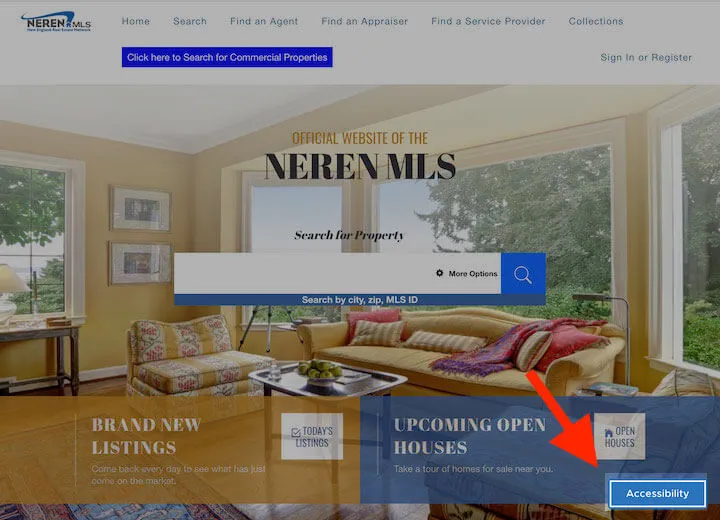
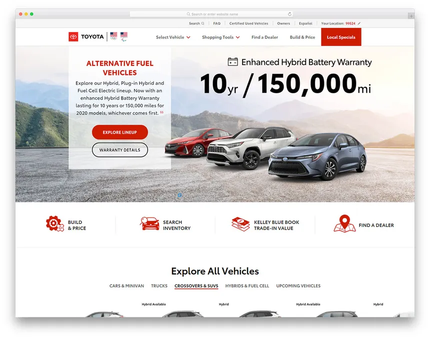

Real Estate website
I achieved success in real estate website development by seamlessly blending HTML, CSS, and JavaScript. My focus on user-centric design resulted in an intuitive interface, while the incorporation of property listings and dynamic features enhanced the overall user experience. The website stands as a testament to my proficiency in creating effective and engaging online platforms.

Car Dealership Website
I achieved success in crafting a dynamic car dealership website through expert use of HTML, CSS, and JavaScript. Prioritizing user experience, I integrated intuitive navigation, enticing visuals, and robust inventory management. The website showcases my ability to create compelling online platforms that elevate the digital presence of car dealerships.
E-commerce Website
I achieved success in constructing an efficient supermarket showcase website with HTML, CSS, and JavaScript. Focused on user-friendly design, I seamlessly integrated product displays, streamlined navigation, and dynamic features. The website exemplifies my skill in creating engaging digital platforms that effectively showcase supermarket offerings and enhance the online shopping experience.
Shopping Website
I achieved success in boutique website development by skillfully leveraging HTML, CSS, and JavaScript. Prioritizing aesthetics and functionality, I crafted an engaging interface, seamless navigation, and dynamic product showcases. The website reflects my ability to create unique and visually appealing online spaces that elevate the digital presence of boutique businesses.

Agri-management Website
I achieved success in agri-business website development by integrating HTML, CSS, and JavaScript. Emphasizing functionality and visual appeal, I created an intuitive interface for seamless user navigation. The website features dynamic content, showcasing my ability to represent agricultural enterprises effectively in the digital realm.

Mobi-shop Website
I achieved success in mobi-shop website development through expert use of HTML, CSS, and JavaScript. Focused on enhancing user experience, I seamlessly integrated mobile products, streamlined navigation, and dynamic features. The website stands as a testament to my skill in creating compelling online platforms that cater specifically to the mobile shopping industry.